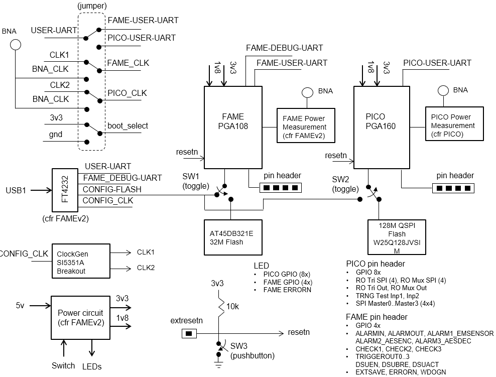

PicoPCB¶
Overview¶

PicoPCB Block Diagram

- The PicoPCB is a test platform for two different chips: FAMEv2 and Picochip. PicoPCB provides the following support functionality for testing FAMEv2 and Picochip: progammable clock generation, power control, passive power measurement, flash programming, user UART.
- PicoPCB Schematics:
PDF